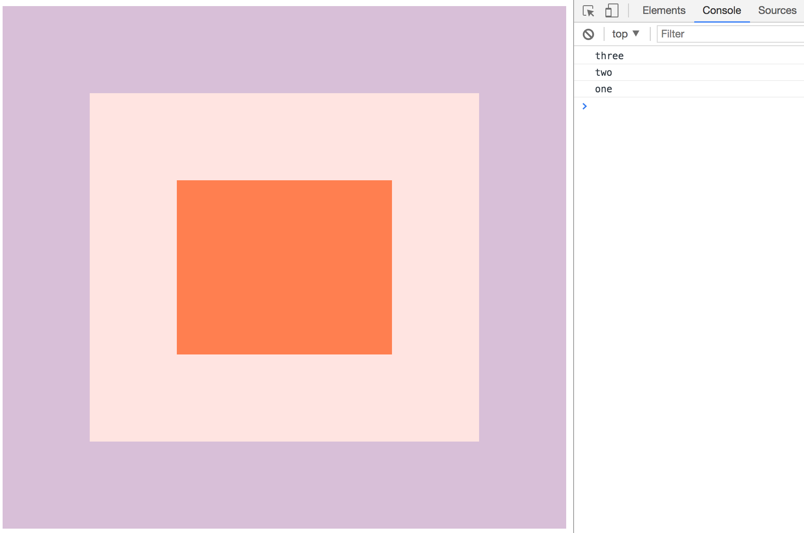
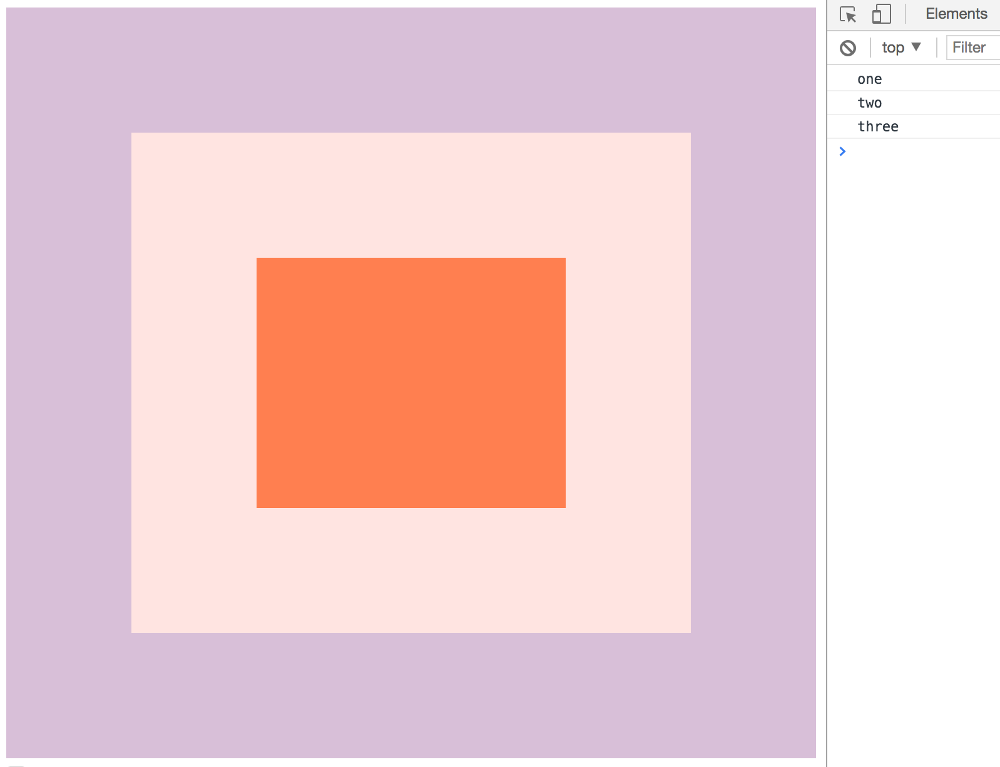
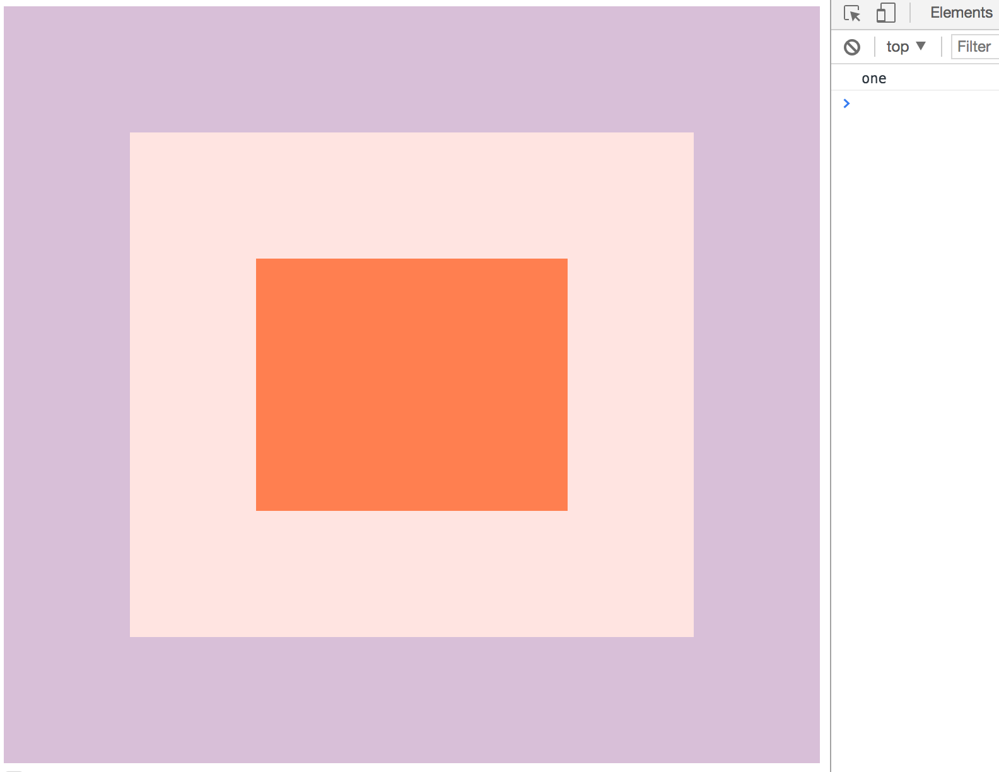
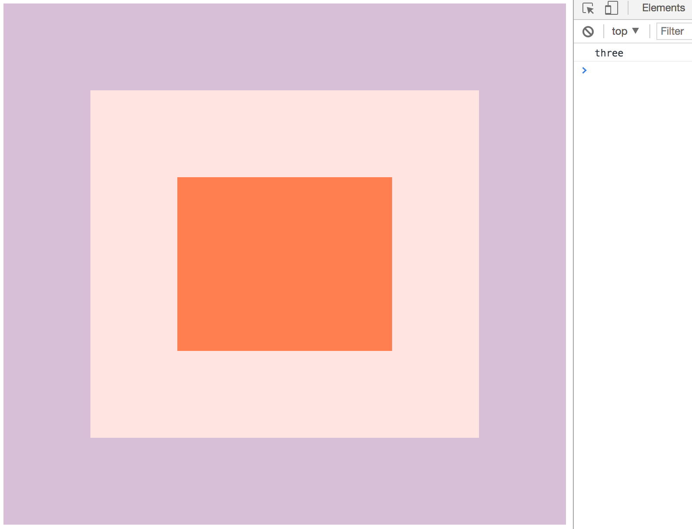

在Github上看到了wesbos的一个Javascript30天挑战的repo，旨在使用纯Js来进行练习，不允许使用任何其他的库和框架，该挑战共30天，我会在这里记录下自己练习的过程和遇到的问题。
第25天的训练是学习DOM的事件机制，主要包括事件捕获，事件冒泡，单次执行事件。
线上DEMO
由于是事件机制的学习，表面上并无实际效果，可以打开开发者工具console面板进行调试查看。
源代码
let divs = document.querySelectorAll('div'); |
同时也看一下HTML的文档结构，对于事件机制的理解也很重要：<div class="one">
<div class="two">
<div class="three">
</div>
</div>
</div>
<button class="button"></button>
EventTarget.addEventListener('eventName',callback,option)：元素的事件注册方法，接收三个参数，第一个参数为事件的名称（点击click、双击dbclick、改变change等），第二个参数是该事件的回调函数，也称为监听器，第三个参数为事件注册的选项对象，通常会包含两个配置项（是否事件捕获capture以及单次执行once事件，它们两个的默认值都是false）。- 当我们点击
class="three"的div的时候，我们也相当于同时点击了class="two"和class="one"。
概念理解
当我们在为个元素注册了事件的时候，他们会将从外到内的个元素的事件监听器放在一个栈内，即：假如我点击了最内侧的three，那么相当于首先点到body，若body上注册了事件，入栈；再看one，注册了事件，入栈；再看two，注册了事件，入栈；再看three，注册了事件，入栈。这时栈内的情况如下（three → two → one → body）。
且我理解事件冒泡和事件捕获只是事件监听器的执行顺序不同：事件捕获在由外到内将监听器入栈的过程中，只要有注册事件入栈，就直接执行并出栈，事件冒泡意为当由外到内所有事件入栈完毕后，事件由内向外执行执行。
在一次事件执行的过程中，一个事件监听器只会执行一次。
由于capture默认为false，即这时事件在冒泡阶段才被执行，最终的输出结果为three two one。

当我们把capture设置为true，即这时事件在捕获阶段就会被执行，最终的输出结果为one two three。

我们可以通过capture属性控制事件是否在捕获阶段执行，同样我们也可以控制是否允许事件冒泡，通过在监听器中执行e.stopPropagation();。在监听器中设置了这条命令，就可以设置该监听器禁止事件冒泡。
因此当我们在监听器中设置了e.stopPropagation();的前提下，设置capture:true。意为事件在捕获阶段执行，且事件不冒泡，即会执行最外层的监听器。最终的结果为one。

当我们在监听器中设置了e.stopPropagation();的前提下，设置capture:false。意为事件即不在捕获阶段执行，也不进行事件冒泡，即会执行最内层的监听器。最终的结果为three。

once:true属性：该监听器只会被执行一次，意为着在执行完一次监听器的时候会自动执行EventTarget.removeEventListener('eventName',callback,option)接触该元素的事件绑定。因此在为div设置了once:true之后，事件监听器只会被执行一次，因此原本可以一直点击触发事件，但现在最多触发一次。
END! 💯